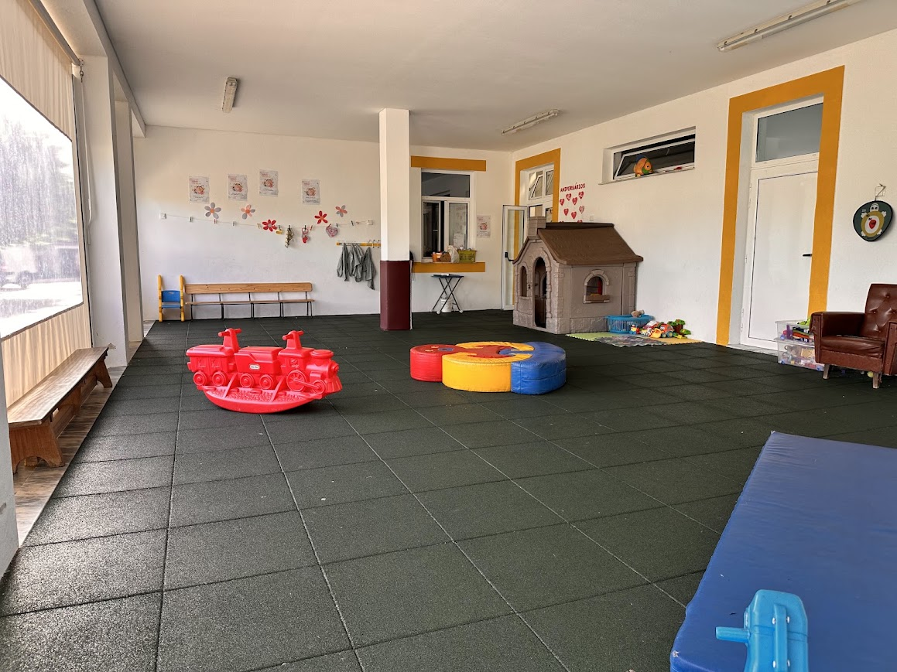
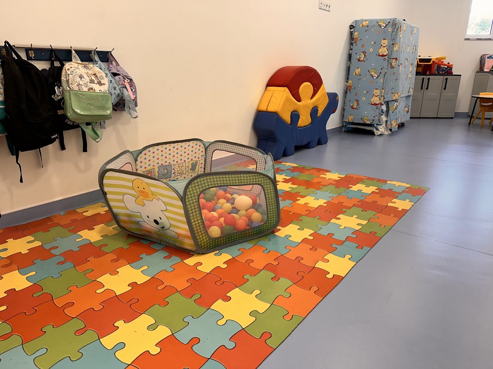
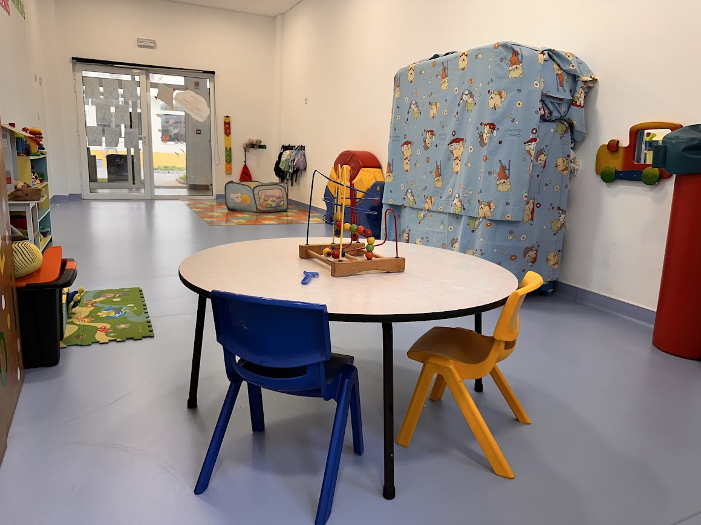
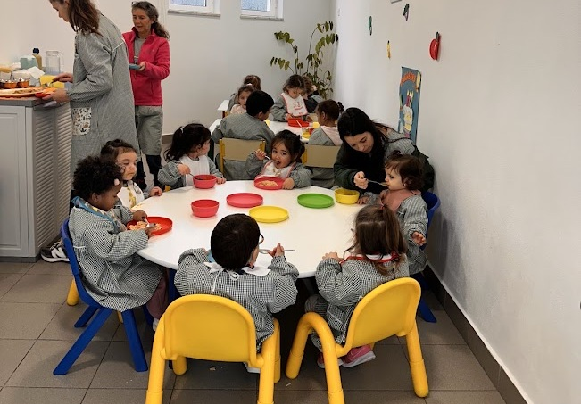
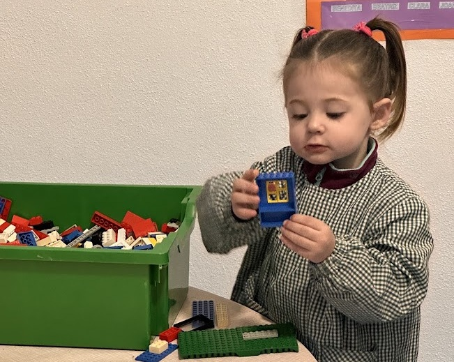
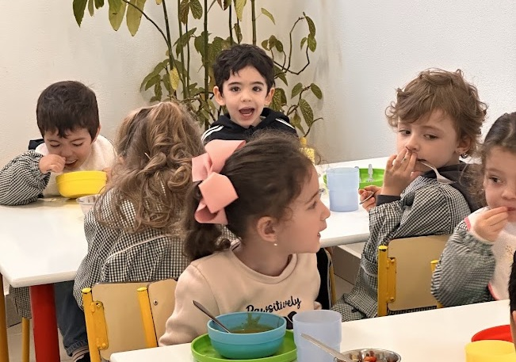

Conheça alguns dos espaços e momentos da nossa Creche.






Sobre a Creche
A Creche da Fundação Centro Social Nossa Senhora do Paço constitui uma resposta social destinada a crianças dos 12 aos 36 meses, proporcionando um ambiente familiar, seguro e afetivo que favorece o seu desenvolvimento integral.
Os primeiros anos de vida são fundamentais para o desenvolvimento físico, emocional, cognitivo e social da criança. Por isso, valorizamos uma educação baseada na confiança, no respeito e na descoberta do mundo através da brincadeira.
Dispomos de espaços acolhedores, luminosos e preparados para proporcionar experiências enriquecedoras, respeitando sempre o ritmo individual de cada criança.
O nosso projeto educativo
Promover uma relação de confiança, cuidado e respeito por cada criança.
Incentivar a livre expressão artística, a criatividade e a descoberta.
Proporcionar um ambiente acolhedor que dê continuidade ao conforto do espaço familiar.
Desenvolver rotinas flexíveis e adaptadas às necessidades de cada criança e de cada família.
Facilitar o acesso das famílias ao espaço educativo e ao dia a dia das crianças.
Construir uma parceria próxima com as famílias, incentivando a sua participação no quotidiano da Creche.
O que oferecemos
Equipa educativa qualificada.
Alimentação equilibrada e adaptada à idade.
Atividades pedagógicas adequadas ao desenvolvimento infantil.
Espaços interiores acolhedores, luminosos e seguros.
Momentos de brincadeira, exploração e socialização.
Contacte-nos
Pretende obter mais informações sobre esta resposta social, esclarecer alguma dúvida ou agendar uma visita? Teremos todo o gosto em ajudá-lo.